Pick one of today's tasks on the watch, focus for 25 minutes, and the time you spent goes back to Todoist. Free, for 45 Garmin watches.
Press the buttons on the watch, or use the arrow keys, Enter and Esc. The tasks are made up and nothing is sent anywhere. At 60× a pomodoro takes 25 seconds.
Todoist is optional and a free account is enough. Connect once from your phone; after that the app opens on today's tasks.
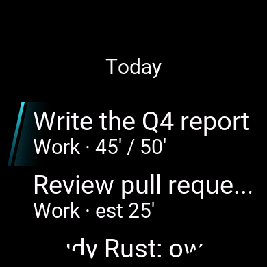
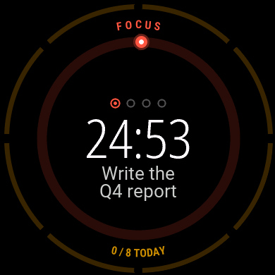
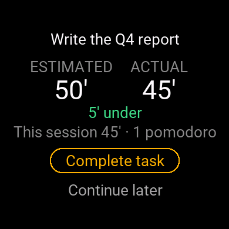
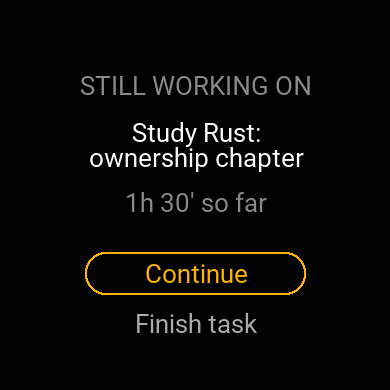
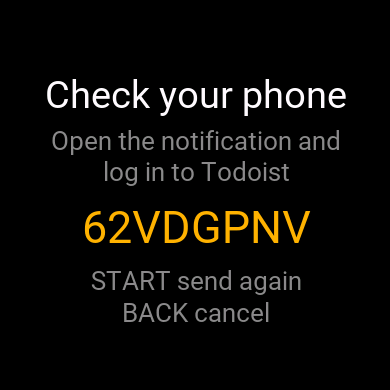
~1h30 in the task title, or use Todoist's duration field.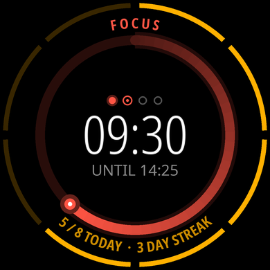
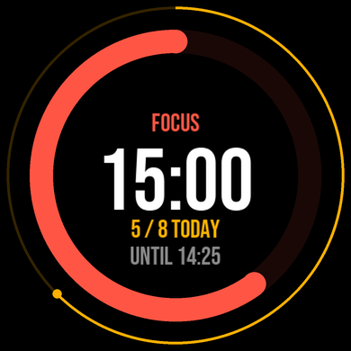
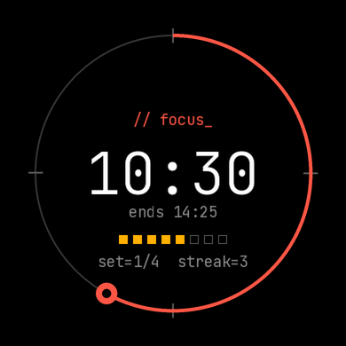
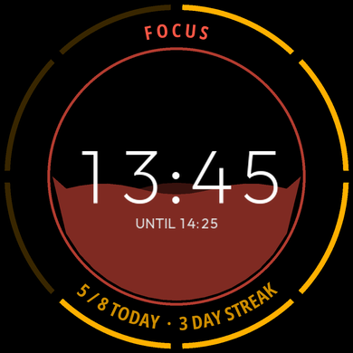
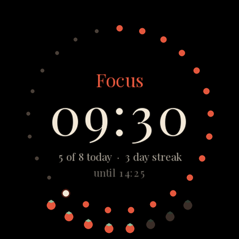
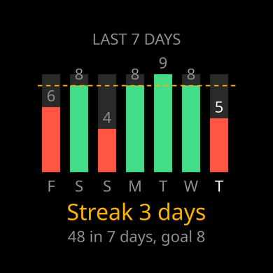
| Button | On the timer | In lists and menus |
|---|---|---|
| START | Start, pause, resume | Select |
| UP | Open the menu | Move up |
| DOWN | Statistics | Move down |
| BACK | Leave the app; the timer keeps running | Go back |
On touchscreen watches, taps on the timer screen are ignored on purpose.
| Setting | Default | Can be |
|---|---|---|
| Style | Ember | Ember, Drain, Mono, Liquid, Classic |
| Focus | 25 min | 5 to 90 min |
| Short break | 5 min | 1 to 30 min |
| Long break | 15 min | 5 to 60 min |
| Long break every | 4 pomodoros | 2 to 8 |
| Daily goal | 8 pomodoros | 1 to 30 |
| Auto-start | Off | On: the next session starts by itself (except after a long break) |
You need the Garmin Connect app on your phone, paired with the watch. The code works for 15 minutes; if it runs out, press START on the watch to get a new one.
The list shows what Todoist has for today, overdue tasks included. Under each task: its project, the time already spent and the estimate (Work · 45' / 50').
Pick a task and start the timer: its title replaces the status line while you focus. When you're done, choose Finish task in the menu. You'll see the estimate against the actual time, then:
Either way the session is added to the task as a comment: 🍅 3 · 75 min (pomodoros and minutes), with “(interrupted)” if you stopped partway through a pomodoro.
Left it open overnight? Each day's time goes to Todoist as its own comment. The next morning the app asks “Still working on…?”, and you can carry on or finish it.
No phone nearby? Sessions wait on the watch and are sent when it can reach the phone again. The list shows how many are still waiting.
If you use Todoist's duration field (in minutes), that's the estimate. Otherwise write a word starting with ~ in the task's title or description:
| You write | Estimate |
|---|---|
~50 or ~50m | 50 minutes |
~1h | 1 hour |
~1h30 or ~1h30m | 1 hour 30 |
The tag is hidden on the watch: “Report ~1h30” shows as “Report”.
Yes, and it stays free. There are no ads and no paid features. If it helps you, you can buy me a coffee.
45 round Garmin watches with five buttons:
No. Without it, Pomodorino is a plain pomodoro timer with goals, streaks and statistics. With it, you work on your tasks. A free Todoist account is enough.
Pomodorino's server talks to Todoist for the watch. It stores only your Todoist account id and access token, a fingerprint of your watch's key, and the minutes spent on each task: no name, email or location. Disconnect Todoist in the menu deletes all of it. Details on the privacy page.
Yes. When a session ends, the watch buzzes and asks you to open Pomodorino again.
Not yet: only Todoist for now.
Open an issue on GitHub, with your watch model.